aem-eds-kit / End-to-end test
Test run · 19 Oct 2026 · v0.4.38A full screen, design to EDS blocks
We ran the whole example page (the HTML twin of the Figma example file, 11 blocks) through eds block from-design with a real AI agent, rendered every block in the preview harness and screenshotted it next to the design. Then we ran every option and error path of the CLI, and migrated 163 real AEM components. Nothing below was retouched.
How it was run
Two design sources, the same 11 blocks each. The agent was Claude Code on its default fast model (Haiku), one run per block, no hand edits.
⌁Stitch / Framer path: scrape
The live page is opened in headless Chromium and its computed layout, type and colours are embedded in the prompt.
$ eds block from-design <page-url> \
--provider stitch --name hero
◇Figma path: frame exported to PNG
The no-token route: each block frame as an image. The example file is 1:1 with the page, so each section at 1440 px stands in for its Figma frame.
$ eds block from-design ./hero.png \
--name hero
- Generate
eds block from-designfor each of the 11 blocks; the agent writes JS, CSS, the Universal Editor model and a preview mock. - Render
eds block test --update --widths 390,768,1440screenshots every block in the preview harness. - Check
eds block checkruns the content and accessibility checks on every content block. - CompareEach block is screenshotted in the harness and pixel-diffed (pixelmatch) against the same section of the design.
Placeholders are on purpose. The prompt forbids shipping copied text or design-tool image URLs: content comes from authoring. Generated blocks therefore render placeholder copy and grey image boxes, and most of the pixel difference is that. Judge layout, spacing and type, not words.
Whole screen
Generated blocks are stacked in page order. Section backgrounds come from the page, not the blocks, so the harness renders them on white. Scroll inside each column.
Desktop, 1440 px
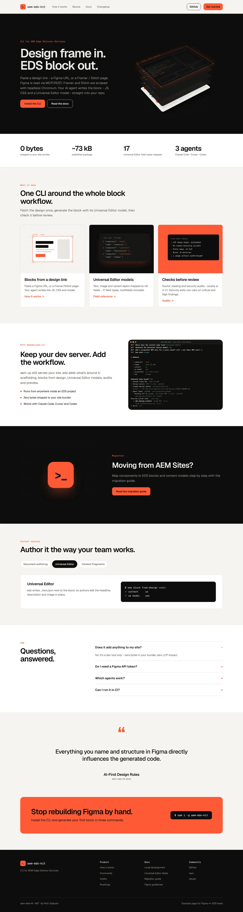
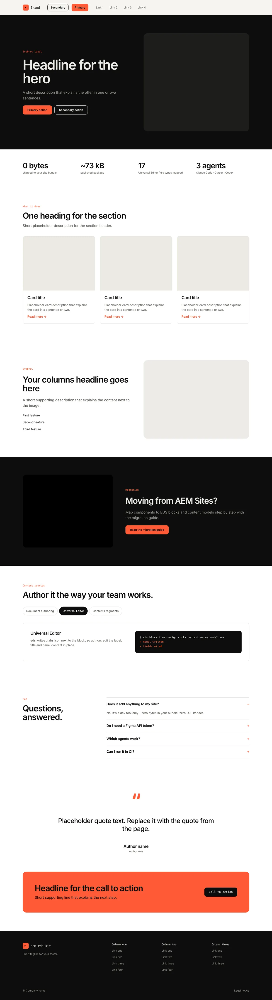
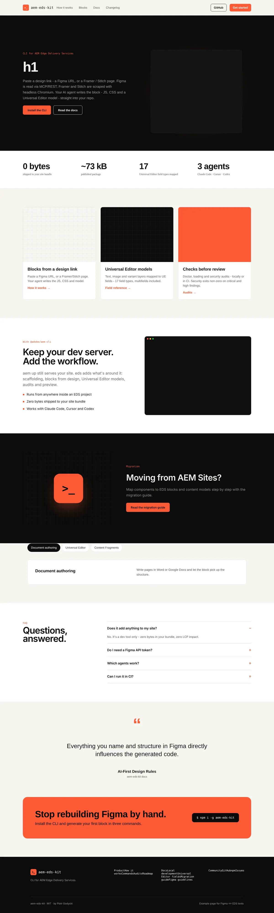
Mobile, 390 px
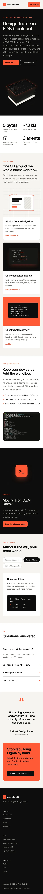
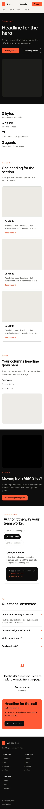
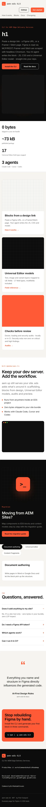
Block by block, 1440 px
header diff at 1440 px: scrape 7.8% · Figma PNG 1.8%
Matches on desktop. On mobile the design collapses the nav to the logo and “Get started”; both generated headers keep every link.
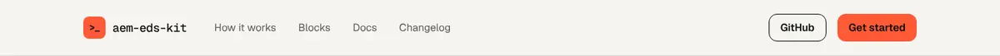
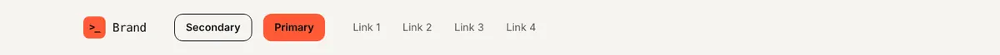
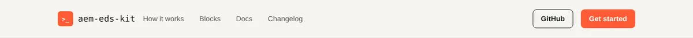
hero diff at 1440 px: scrape 5.1% · Figma PNG 5.1%
Layout, type scale and spacing land on both paths. On the PNG path the headline reads “h1”: the mock nests one div deeper than decorate() expects, so the heading-level value is taken for the title.
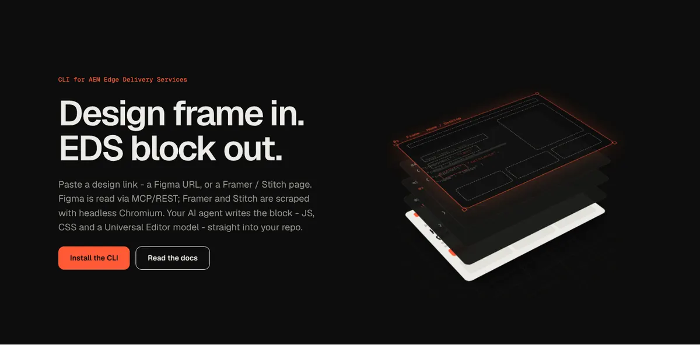
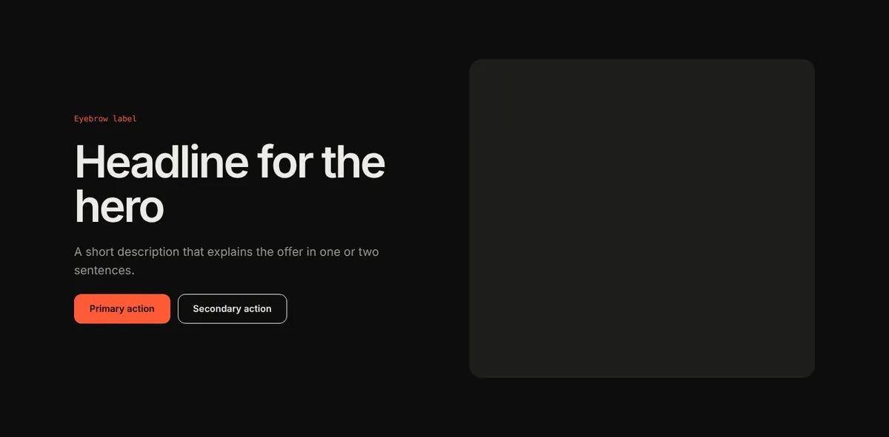
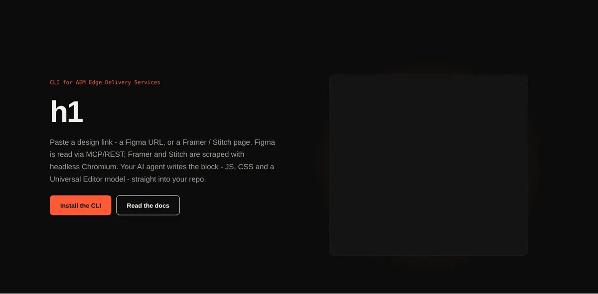
stats diff at 1440 px: scrape 1.5% · Figma PNG 2.8%
Desktop matches. At 390 px the design is a 2×2 grid; both generated blocks stack to one column.
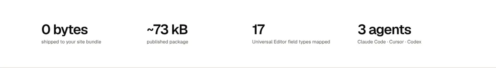
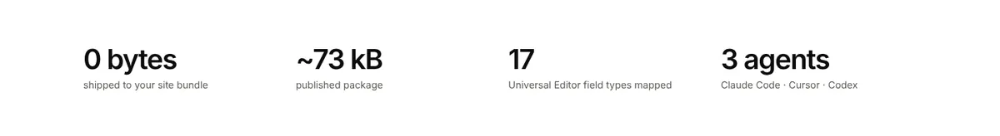
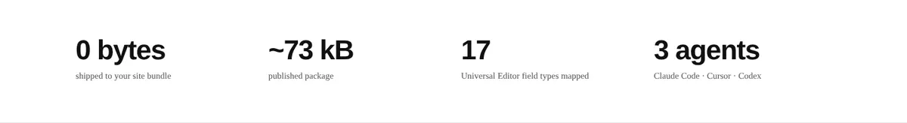
cards diff at 1440 px: scrape 19.9% · Figma PNG 37.7%
Scrape keeps the section header. The PNG export drops it (eyebrow, title, intro).
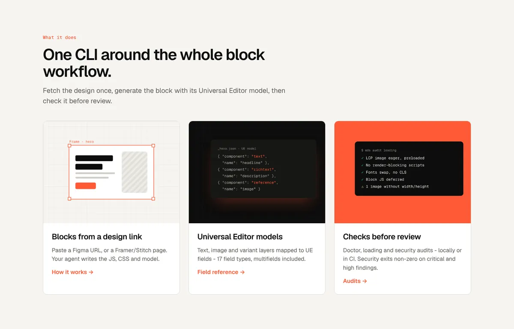
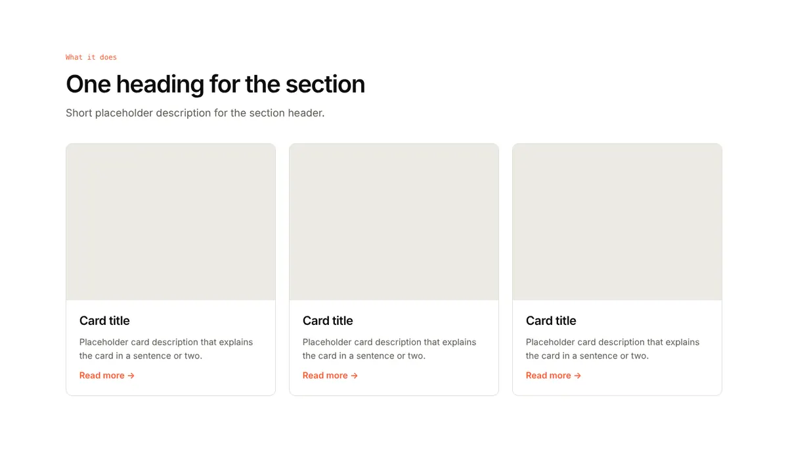
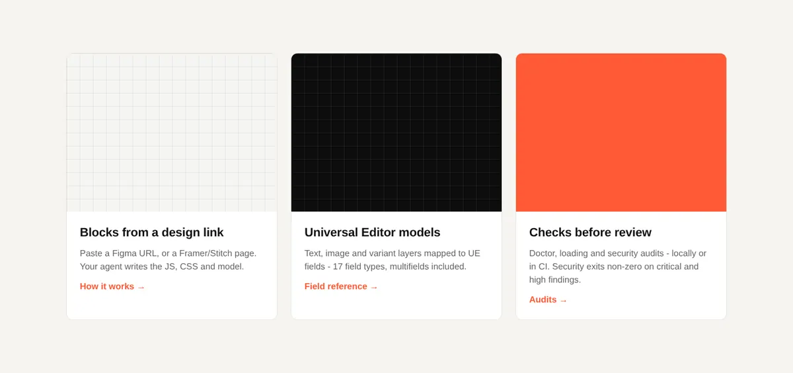
columns diff at 1440 px: scrape 27.1% · Figma PNG 3.3%
Scrape misses the list bullets; the PNG path keeps them. Most of the scrape diff is the placeholder image.
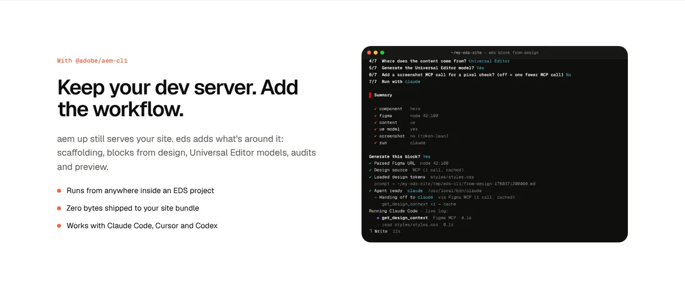
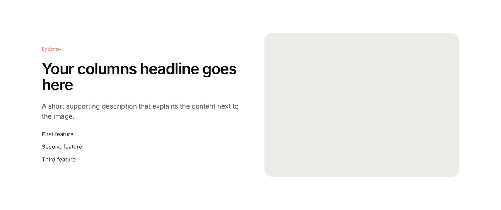
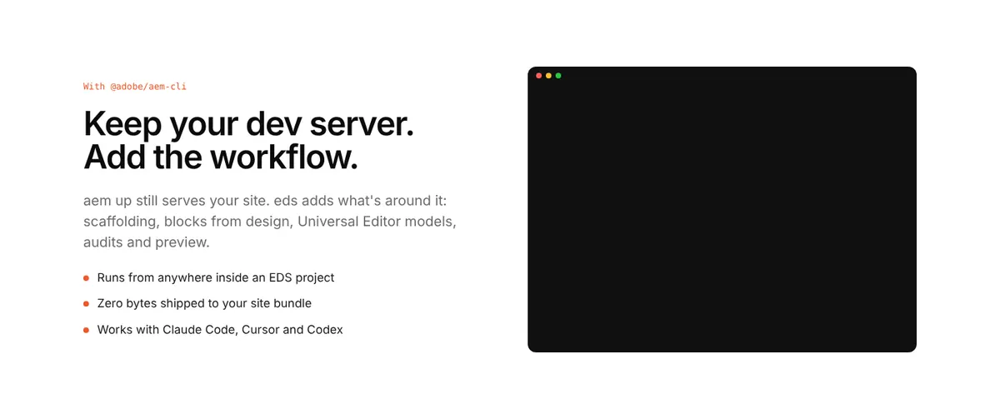
tabs diff at 1440 px: scrape 1.8% · Figma PNG 5.2%
Scrape is near-identical. The PNG export drops the section header and the code panel.
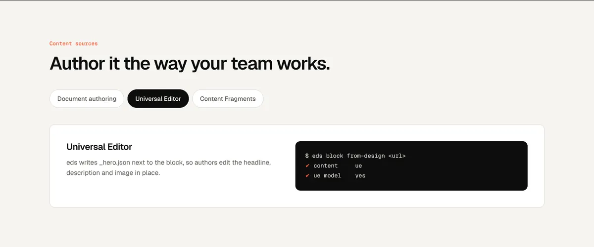
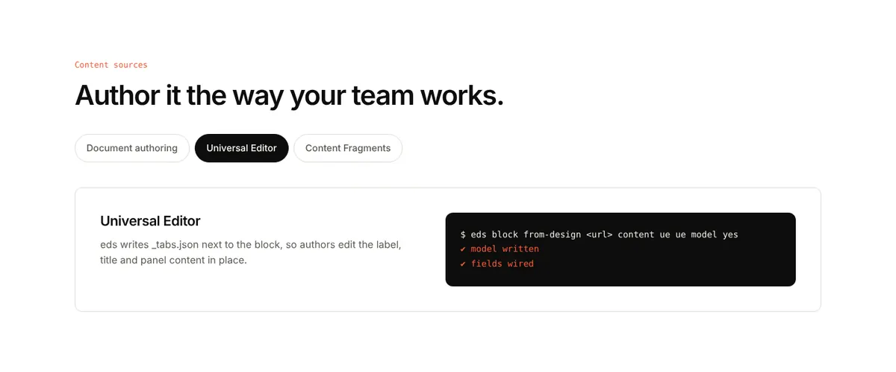
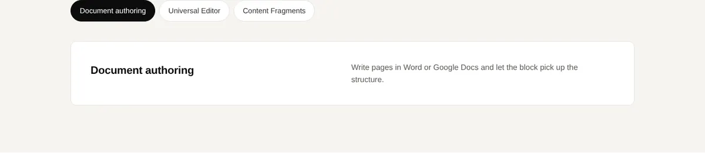
accordion diff at 1440 px: scrape 1.4% · Figma PNG 1.9%
Close on both paths, including the open first item.
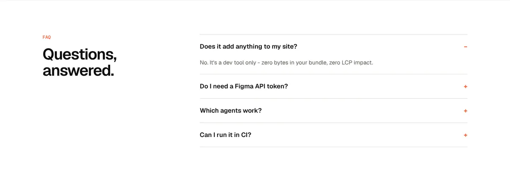
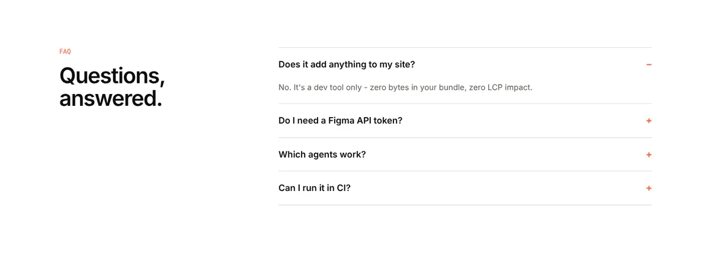
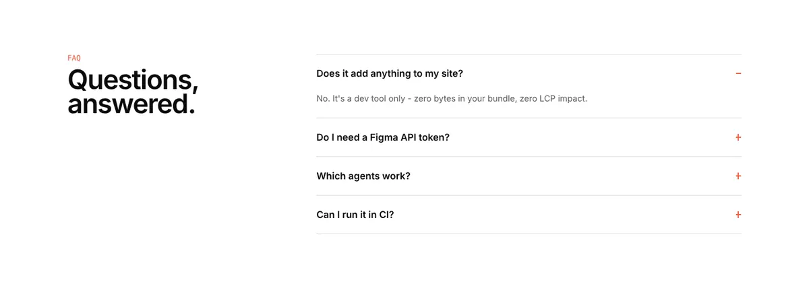
quote diff at 1440 px: scrape 1.3% · Figma PNG 1.2%
Close on both paths.
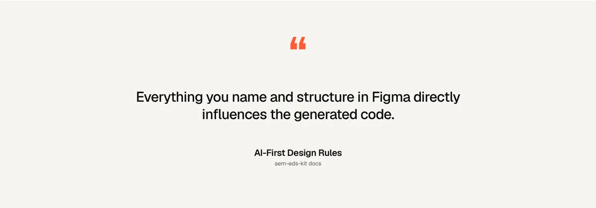
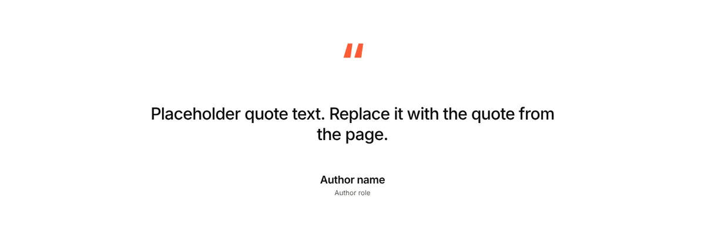
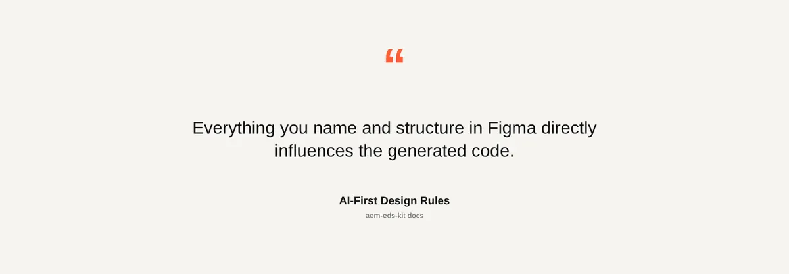
cta-banner diff at 1440 px: scrape 2.6% · Figma PNG 2.7%
Close on desktop; the higher mobile diff comes from placeholder copy wrapping differently.
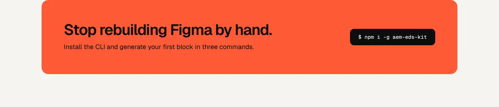
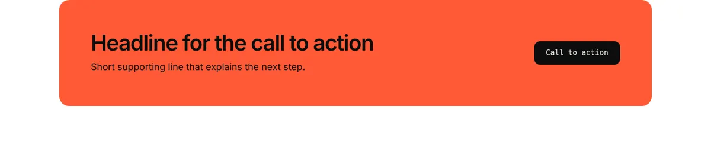
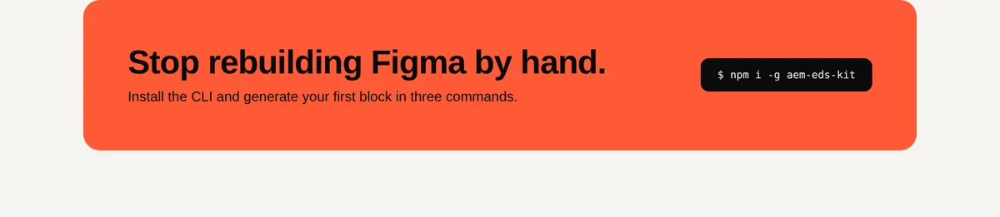
Every case
65 cases, each in a fresh project, each checking the exit code and what the CLI prints (and files it writes, where that matters). The scrape cases run real headless Chromium against the example page.
Design source 14 / 14
Every way a design gets in: host detection, the real Chromium scrape, cache and --refresh, local PNG / SVG exports, and the Figma URL paths (MCP, REST with fallback, cached snapshot, whole file, legacy links).
| # | Case | Command | Result |
|---|---|---|---|
| A01 | Stitch URL is detected from the host | eds block from-design https://stitch.withgoogle.com/projects/123 --name hero --dry-run | pass |
| A02 | Framer URL is detected from the host | eds block from-design https://acme.framer.website/pricing --name hero --dry-run | pass |
| A03 | Any page scraped with --provider stitch (real Chromium) | eds block from-design <site>/example/ --provider stitch --name hero --agent none | pass |
| A04 | Any page scraped with --provider framer | eds block from-design <site>/example/ --provider framer --name hero --agent none | pass |
| A05 | Second scrape reuses the cache | eds block from-design <site>/example/ --provider stitch --name hero --agent none | pass |
| A06 | --refresh re-scrapes past the cache | eds block from-design <site>/example/ --provider stitch --name hero --agent none --refresh | pass |
| A07 | Local PNG export (Figma frame) | eds block from-design hero.png --name hero --dry-run | pass |
| A08 | Local SVG export (bundled --sample) | eds block from-design --sample --dry-run | pass |
| A09 | Figma URL, no token → MCP, fetched once and cached | eds block from-design https://www.figma.com/design/AbCdEf123/Kit-Example?node-id=12-345 --name hero --dry-run | pass |
| A10 | Figma URL, bad token → REST fails, falls back to MCP | eds block from-design https://www.figma.com/design/AbCdEf123/Kit-Example?node-id=12-345 --name hero --agent none | pass |
| A11 | Figma URL, token + --mcp → MCP, no REST call | eds block from-design https://www.figma.com/design/AbCdEf123/Kit-Example?node-id=12-345 --name hero --dry-run --mcp | pass |
| A12 | Figma URL with a cached snapshot → embedded, no MCP | eds block from-design https://www.figma.com/design/AbCdEf123/Kit-Example?node-id=12-345 --name hero --dry-run | pass |
| A13 | Figma URL with no node → whole file | eds block from-design https://www.figma.com/design/AbCdEf123/Kit --name hero --dry-run | pass |
| A14 | Legacy /file/ Figma URL | eds block from-design https://www.figma.com/file/AbCdEf123/Kit?node-id=12%3A345 --name hero --dry-run | pass |
Options 13 / 13
Content sources, UE model, screenshot call, block-name inference, and saved-session scraping (--auth).
| # | Case | Command | Result |
|---|---|---|---|
| B01 | --source document (default): no content-source section | eds block from-design https://www.figma.com/design/AbCdEf123/Kit-Example?node-id=12-345 --name hero --dry-run | pass |
| B02 | --source ue: Universal Editor model required | eds block from-design https://www.figma.com/design/AbCdEf123/Kit-Example?node-id=12-345 --name hero --dry-run --source ue | pass |
| B03 | --source cf: Content Fragment guidance | eds block from-design https://www.figma.com/design/AbCdEf123/Kit-Example?node-id=12-345 --name hero --dry-run --source cf | pass |
| B04 | --source mixed: CF + UE guidance | eds block from-design https://www.figma.com/design/AbCdEf123/Kit-Example?node-id=12-345 --name hero --dry-run --source mixed | pass |
| B05 | --source with an unknown value is rejected | eds block from-design https://www.figma.com/design/AbCdEf123/Kit-Example?node-id=12-345 --name hero --dry-run --source sharepoint | pass |
| B06 | --no-ue-model drops the UE step | eds block from-design https://www.figma.com/design/AbCdEf123/Kit-Example?node-id=12-345 --name hero --dry-run --no-ue-model | pass |
| B07 | --screenshot adds one get_screenshot call | eds block from-design https://www.figma.com/design/AbCdEf123/Kit-Example?node-id=12-345 --name hero --dry-run --screenshot | pass |
| B08 | Block name from a local file name | eds block from-design Hero Banner.png --dry-run | pass |
| B09 | Block name from the page URL | eds block from-design <site>/example/ --provider stitch --dry-run | pass |
| B10 | Figma node selected without --name → warns the name came from the file | eds block from-design https://www.figma.com/design/AbCdEf123/Kit-Example?node-id=12-345 --dry-run | pass |
| B11 | --auth with a saved session reuses it (headless) | eds block from-design <site>/example/ --provider stitch --name hero --agent none --auth | pass |
| B12 | --auth-refresh with no display fails cleanly | eds block from-design <site>/example/ --provider stitch --name hero --agent none --auth-refresh | pass |
| B13 | --auth is ignored on a dry run | eds block from-design <site>/example/ --provider stitch --name hero --dry-run --auth | pass |
Agent hand-off 14 / 14
What happens after the agent runs. These use a stand-in claude that writes known files, so each outcome is forced: a good block, nothing, a broken export, a missing model, a crash.
| # | Case | Command | Result |
|---|---|---|---|
| C01 | Agent writes a valid block → verified, meta saved | eds block from-design <site>/example/ --provider stitch --name hero --agent claude --yes | pass |
| C02 | --widths overrides the agent's widths | eds block from-design <site>/example/ --provider stitch --name hero --agent claude --yes --widths 390,768,1440 | pass |
| C03 | Prompt reaches the agent on stdin (146 KB page) | eds block from-design <site>/example/ --provider stitch --name hero --agent claude --yes | pass |
| C04 | Agent writes nothing → clear failure | eds block from-design <site>/example/ --provider stitch --name hero --agent claude --yes | pass |
| C05 | Agent writes nothing, no Figma MCP configured → says so | eds block from-design https://www.figma.com/design/AbCdEf123/Kit-Example?node-id=12-345 --name hero --agent claude --yes | pass |
| C14 | --source cf: block with no CF field or fetch is flagged | eds block from-design <site>/example/ --provider stitch --name hero --agent claude --yes --source cf | pass |
| C06 | JS without a default export fails verification | eds block from-design <site>/example/ --provider stitch --name hero --agent claude --yes | pass |
| C07 | Repeatable model but decorate() never iterates → warned | eds block from-design <site>/example/ --provider stitch --name hero --agent claude --yes | pass |
| C08 | Missing UE model → warned; fine with --no-ue-model | eds block from-design <site>/example/ --provider stitch --name hero --agent claude --yes --no-ue-model | pass |
| C09 | Missing UE model without --no-ue-model → warned | eds block from-design <site>/example/ --provider stitch --name hero --agent claude --yes | pass |
| C10 | Agent exits non-zero → failure | eds block from-design <site>/example/ --provider stitch --name hero --agent claude --yes | pass |
| C11 | No agent installed → install hint, prompt kept | eds block from-design <site>/example/ --provider stitch --name hero --yes | pass |
| C12 | --agent cursor not installed → warns, uses the agent found | eds block from-design <site>/example/ --provider stitch --name hero --agent cursor --yes | pass |
| C13 | --serve starts the preview after generating | eds block from-design <site>/example/ --provider stitch --name hero --agent claude --yes --serve | pass |
Bad input 8 / 8
Wrong flags, wrong URLs, unreachable and gated pages, and running outside a project.
| # | Case | Command | Result |
|---|---|---|---|
| D01 | Unknown --provider | eds block from-design <site>/example/ --provider canva --name hero --dry-run | pass |
| D02 | Block name not kebab-case | eds block from-design https://www.figma.com/design/AbCdEf123/Kit-Example?node-id=12-345 --name Hero_Banner --dry-run | pass |
| D03 | Figma URL without a file key | eds block from-design https://www.figma.com/community/plugins --name hero --dry-run | pass |
| D04 | Local design file that doesn't exist | eds block from-design ./missing.png --name hero --dry-run | pass |
| D05 | Unreachable page → scrape failed | eds block from-design http://localhost:1/ --provider stitch --name hero --agent none | pass |
| D06 | 404 page → warns the page looks like an error shell | eds block from-design <site>/nope/ --provider stitch --name hero --agent none | pass |
| D07 | Login page → warns and points at --auth | eds block from-design <site>/__login/ --provider stitch --name hero --agent none | pass |
| D08 | Outside an EDS project | eds block from-design https://www.figma.com/design/AbCdEf123/Kit-Example?node-id=12-345 --name hero --dry-run | pass |
Test, check, preview 16 / 16
eds block test baselines, diffs, thresholds and updates; eds block check errors, warnings and --strict; the preview servers.
| # | Case | Command | Result |
|---|---|---|---|
| E01 | First run creates the baselines | eds block test --widths 390,1440 | pass |
| E02 | Unchanged blocks pass | eds block test --widths 390,1440 | pass |
| E03 | A CSS change fails with a diff image | eds block test --widths 390,1440 | pass |
| E04 | --threshold lets a change through | eds block test stats --threshold 1 --widths 390,1440 | pass |
| E05 | --update accepts the change | eds block test stats --update --widths 390,1440 | pass |
| E06 | …and the next run passes | eds block test stats --widths 390,1440 | pass |
| E07 | A different block height fails as a size change | eds block test quote --widths 390,1440 | pass |
| E08 | --design without a Figma source in meta | eds block test hero --design | pass |
| E09 | Unknown block name | eds block test nope --widths 390,1440 | pass |
| E10 | Content check on clean blocks | eds block check | pass |
| E11 | Content check flags a11y errors | eds block check bad | pass |
| E12 | Warnings pass by default… | eds block check bad | pass |
| E13 | …and fail with --strict | eds block check bad --strict | pass |
| E14 | A mock nested one div too deep is flagged | eds block check nest | pass |
| E15 | Single-block preview serves the harness | eds block preview hero --no-open --port 8795 | pass |
| E16 | Gallery preview serves every block | eds block preview --no-open --port 8796 | pass |
Other sources with the real agent
| Run | Source | Result |
|---|---|---|
| Framer | --provider framer, the example page | hero generated, clean in check |
| SVG sample | --sample (Kiri Bloom, a Figma SVG export) | hero generated with its real copy and artwork |
| CF | --source cf, cards | generated, but no Content Fragment field or fetch (EDS-019) |
| Mixed | --source mixed, teaser | same as CF (EDS-019); now flagged by verification (EDS-011) |
| No UE model | --no-ue-model, quote | generated without _quote.json, as asked |
| Figma, no MCP | a Figma URL, no token, no Figma MCP | agent can't read the design and writes nothing; the CLI now says why (EDS-010) |
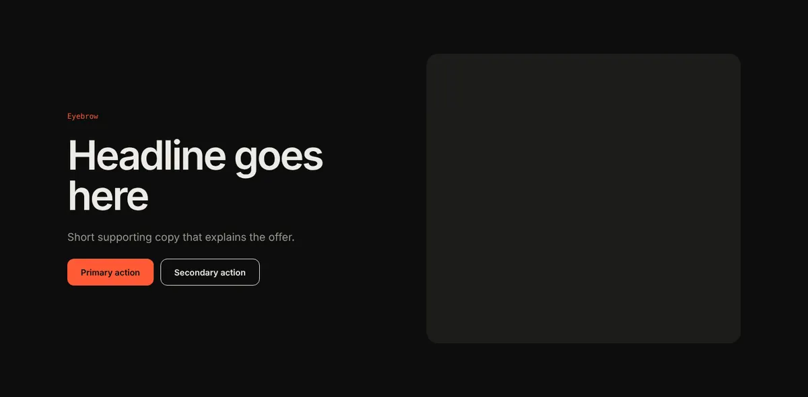
Migrating AEM components: AEMaaCS and AEM 6.5
eds migrate component was run on every component with a dialog in four public projects, plus every proxy component. Each migrated block was then loaded in the preview and run through eds block check.
| Project | Platform | Components | Migrated | Fields |
|---|---|---|---|---|
| Core Components | AEMaaCS and AEM 6.5 | 64 | 63 | 434 |
| WKND | AEMaaCS (30 proxy components) | 35 | 34 | 214 |
| We.Retail | AEM 6.3–6.5 (21 proxies, Coral 2 dialogs) | 38 | 28 | 155 |
| ACS Commons | AEM 6.x | 26 | 26 | 127 |
Before the fixes, proxy components (the usual AEMaaCS setup: no dialog of their own, only sling:resourceSuperType) all failed, the Core Components page picker was dropped from 17 dialogs, and 57 choice fields came out with no options, which Universal Editor rejects. Now all 930 fields are valid, and all 151 blocks render without a script error and pass eds block check. The 12 that don't migrate have no authorable fields (panelcontainer) or point at product components that exist only in /libs (Commerce, Social, Experience Fragment pages).
$ eds migrate component ui.apps/…/apps/wknd/components/teaser \ --super-root aem-core-wcm-components/content/src/content/jcr_root ↳ Dialog inherited from core/wcm/components/teaser/v2/teaser ▊ Mapped fields 14 from dialog
Bugs found, tracked as issues
Every bug and gap found here is a GitHub issue. Each fix lands through its own bug/EDS-NNN or feature/EDS-NNN branch and pull request, and merging it closes the issue.
| Issue | What | Status |
|---|---|---|
| EDS-001 | Agent never started on a full-page scrape (E2BIG) | fixed |
| EDS-002 | block test --design always crashed | fixed |
| EDS-003 | Scraped frame widths saved as default widths | fixed |
| EDS-005 | Proxy components couldn't be migrated | fixed |
| EDS-006 | AEMaaCS link, XF and CF pickers dropped | fixed |
| EDS-007 | Invalid UE models (empty selects, duplicate names) | fixed |
| EDS-008 | Unknown --source treated as mixed | fixed |
| EDS-009 | Figma community URL taken as a file | fixed |
| EDS-010 | Misleading MCP-limit hint with no MCP | fixed |
| EDS-011 | No check that CF blocks use a fragment | fixed |
| EDS-012 | img-cls check never fired | fixed |
| EDS-013 | Mock nested deeper than EDS markup not flagged | fixed |
| EDS-015 | Guide pages scrolled sideways on phones | fixed |
| EDS-017 | Cursor / Codex still get the prompt as an argument | open |
| EDS-018 | Classic UI dialogs (AEM 6.5) not migrated | open |
| EDS-019 | Default model ignores Content Fragment guidance | open |
| EDS-020 | Figma REST / MCP not yet tested on a real file | open |
| EDS-021 | Test baselines padded to 900 px | open |